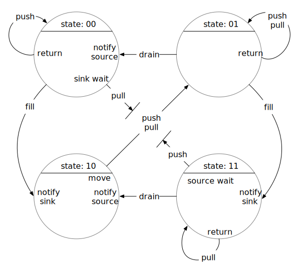

Analysis of Port State Machine
The file fsm.h implements a state machine for two communicating ports, Source and Sink. Each port has two states, empty or full. There are two transition events associated with the source: fill, which transitions from empty to full and tells the state machine there is an item in the Source, and and push, which initiates transfer to the Sink and transitions from full to empty.
Similarly, there are two events associated with the sink: drain, which transitions from full to empty and tells the Sink node that its item has been removed, and and pull, which attempts to transfer an item from the Source and transitions from empty to full. For simplicity, though we may need them in the future, we not consider events for startup, stop, forced shutdown, or abort.
The following diagram shows the state transitions for the port state machine. The state is represented with two bits, one for the source and one for the sink, e.g., “00” meaning that the source state is 0 and the sink state is 1.

To provide the functionality of the state machine for the purposes of safely transferring data from a Source to a Sink, there are exit and entry actions associated with selected states and events.
One particular aspect of this is the pull event from state 00 and the push event from state 11. In these cases, the exit action is “wait”, since the only valid state to complete a push or a pull is from state 01. Accordingly, we perform notifications as entry actions to state 10.
When a source or sink thread is released from its wait, it is still in the push or pull event. To enable it to complete that desired operation, we restart the event processing for the push or pull event in the current state.
(As a slight optimization, we also perform notifications on entry to states 00 and 11. The waiter doesn’t get to move in that case, but does get to leave the wait and produce or consume an item and then try to push or pull again.)
Our basic goal for the Source and Sink ports is to transfer a data item from a Source to a connected (bound) Sink. At a high level, the way a client would use the Source to do this is the following: - create a data item - insert the data item into a Source port - invoke the fill event - invoke the push event
Similarly, the desired usage of a Sink port is also to transfer a data item from a Source to a bound Sink. At a high level, the way a client would use the Source is the following - invoke the pull event - extract the data item from the Sink port - consume the item - invoke the drain event
Based on these product states and the four above events, the state transition table for the product state machine (which we will just refer to as the “state machine” below is the following:
| State | Event | ||||
|---|---|---|---|---|---|
| fill | push | drain | pull | stop | |
| 00 | 10 | 00 | 01 | ||
| 01 | 11 | 01 | 00 | 01 | |
| 10 | 01 | 01 | |||
| 11 | 01 | 10 | 11 |
Using this table, we can include the states as predicates to create an initial “proof outline” statements for the Source operation:
while (not done) {
/* { state = 00 ∨ state = 01 } ∧ { source_item = empty } */
do produce and insert item
/* { state = 00 ∨ state = 01 } ∧ { source_item = full } */
do fill
/* { state = 10 ∨ state = 11 } ∧ { source_item = full } */
do push
/* { state = 00 ∨ state = 01 } ∧ { source_item = empty } */
}Similarly for Sink:
while (not done) {
/* { state = 00 ∨ state = 10 } ∧ { sink_item = empty } */
do pull
/* { state = 01 ∨ state = 11 } ∧ { sink_item = full } */
do extract and consume item
/* { state = 01 ∨ state = 11 } ∧ { sink_item = full } */
do drain
/* { state = 00 ∨ state = 10 } ∧ { sink_item = empty } */
}Now, the Source and Sink need to coordinate push and pull so there is not a race condition (nor a deadlock) when making transitions in the state machine. Moreover, we have to make sensible transitions. That is, we only be able to succesfully do a push when the Sink state is empty (and the Sink item itself is empty). This is why we insert a new item and then invoke fill. Until the state has transitioned to indicate the state of the Source is full, the Sink will not attempt to transfer the item. Similarly, we empty the sink_item and then signal that the Sink is in the empty state.
To do this, we associate exit and entry actions with each state transition, some of which will synchronize between Source and Sink. These actions are used with the state transition thusly:
- begin_transition: given old_state and event
- execute exit(old_state, event)
- new_state = transition(old_state, event)
- execute entry(new_state, event)
Note that the exit action is called before the state transition. Note also that the entry action is called with the new state (the post transition state).
The tables for exit actions to be perfomed on state transitions is:
| State | Events | ||||
|---|---|---|---|---|---|
| fill | push | drain | pull | stop | |
| 00 | return | sink_wait | |||
| 01 | return | return | |||
| 10 | source_swap | sink_swap | |||
| 11 | source_wait | return |
The table for entry actions to be performend on state transitions is:
| State | Events | ||||
|---|---|---|---|---|---|
| fill | push | drain | pull | shutdown | |
| 00 | notify_source | ||||
| 01 | |||||
| 10 | notify_sink | notify_source | |||
| 11 | notify_sink |
The source_swap function is used to potentially transfer the data items associated with Source and Sink from the Source to the Sink (as well as changing the state if data transfer is carried out). The source_swap function is invoked whenever the state is 10 (which is when there is an item in Source and space available to transfer to the Sink. The data transfer is carried out by swapping the Source and Sink items and changing the state of 10 to 01.
When the state is 00, the Sink will wait for the Source to become full. The Source will notify the Sink when it becomes full. Similarly, if the state is 11, the Source will wait until it is signalled by the Sink that the Sink is empty.
Proof Outline
To prove correctness of the port state machine, we use proof outline techniques from e.g., Concurrent Programming by Greg Andrews. For this proof outline, we represent the overall state of a connected Source and Sink with two boolean arrays, each with two elements, shared by the Source and Sink: state and items.
Actions
For the purposes of a proof outline, the Source has three operations:
1. inject: items[0] ← 1
2. fill: state[0] ← 1
3. push: 〈 await ¬{ state = 11 } :
if { state = 10 ∧ items = 10 } → { state = 01 ∧ items = 01 } ⟩Similarly, for the purposes of a proof outline, the Sink has three operations:
1. extract: item[1] ← 0
2. drain: state[1] ← 0
3. pull: 〈 await ¬{ state = 00 } :
if { state = 10 ∧ items = 10 } → { state = 01 ∧ items = 01 } ⟩Source Proof Outline
The critical operation of the Source is the push, which blocks (awaits) until ¬{ state = 11 }, that is, until the state is not equal to 11. In that case, states 00, 01, and 10 could pass through. However, in addition to the await, push includes a data transfer step (a “move”) that will perform the following predicate transformation for { state = 10 }:
/* { state = 10 ∧ items = 10 } → { state = 01 ∧ items = 01 } */This represents moving a data item from the Source to the Sink. Note that both the state machine state and the actual data items being held are (atomically) changed in the move.
Based on these properties of the push, we have the following valide states that can occur directly following a push:
/* { state = 00 ∧ items = 00 } ∨ */
/* { state = 01 ∧ items = 01 } */The push itself is atomic, but as soon as it has completed, the state of the port can be changed by the Sink operating asynchronously to the Source. Given the three operations that the Sink can perform, the above states can be subject to pull, extract, or extract+drain. The pull operation will not change the state. The extract operation can change { items = 01 } to { items = 00 }. Similarly, drain can change { state = 01 } to { state = 00 }. Note that extract always precedes drain – the Sink cannot change { state = 01 ∧ items = 01 } into { state = 00 ∧ items = 01 }.
Thus, the entire set of possible configurations following push are
/* { state = 00 ∧ items = 00 } ∨ */
/* { state = 01 ∧ ( items = 00 ∨ items = 01 ) } */Following the push, the Source may inject, which will change the above states to:
/* { state = 00 ∧ items = 10 } ∨ */
/* { state = 01 ∧ ( items = 11 ∨ items = 10 ) } */Again, the Sink may extract, drain, or pull. However, the only change that can occur is that extract may change { items = 11 } to { items = 10 }, which is already part of the above configuration. A subsequent drain may then change
{ state = 01 ∧ items = 10 } to { state = 00 ∧ items = 10 }, which again, is already part of the above configuration. Thus, the Sink operating asynchronously will not change the system predicate between inject and fill. In other words, the sequence inject then fill can be considered to be atomic.
For the fill operation, the above predicate will be changed to
/* { state = 10 ∧ items = 10 } ∨ */
/* { state = 11 ∧ ( items = 11 ∨ items = 10 ) } */Asynchronous operation of the Sink can change this predicate to
/* { state = 00 ∧ items = 00 } ∨ */
/* { state = 01 ∧ ( items = 00 ∨ items = 01 ) } ∨ */
/* { state = 10 ∧ items = 10 } ∨ */
/* { state = 11 ∧ ( items = 10 ∨ items = 11 ) } */Final Source Proof Outline
Thus, the proof outline for the Source is
while (not done) {
/* { state = 00 ∧ items = 00 } ∨ { state = 01 ∧ ( items = 00 ∨ items = 01 ) } */
inject: items[0] ← 1
/* { state = 00 ∧ items = 10 } ∨ { state = 01 ∧ ( items = 10 ∨ items = 11 ) } */
fill: state[0] ← 1
/* { state = 00 ∧ items = 00 } ∨ { state = 01 ∧ ( items = 00 ∨ items = 01 ) } ∨ */
/* { state = 10 ∧ items = 10 } ∨ { state = 11 ∧ ( items = 10 ∨ items = 11 ) } */
push: 〈 await ¬{ state = 11 } :
if { state = 10 ∧ items = 10 } → { state = 01 ∧ items = 01 } ⟩
/* { state = 00 ∧ items = 00 } ∨ { state = 01 ∧ ( items = 00 ∨ items = 01 ) } */
}Sink Proof Outline
We can follow a similar process to derive the proof outline for the Sink.
The critical operation of the Sink is the pull, which blocks (awaits) until ¬{ state = 00 }, that is, until the state is not equal to 00. In that case, states 01, 10, and 11 could pass through. However, in addition to the await, pull includes a data transfer step (a “move”) that will perform the following predicate transformation for { state = 10 }:
/* { state = 10 ∧ items = 10 } → { state = 01 ∧ items = 01 } */This represents moving a data item from the Source to the Sink. Note that both the state machine state and the actual data items being held are (atomically) changed in the move.
Based on these properties of the push, we have the following valide states that can occur directly following a push:
/* { state = 01 ∧ items = 01 } ∨ */
/* { state = 11 ∧ items = 11 } */The pull itself is atomic, but as soon as it has completed, the state of the port can be changed by the Source operating asynchronously to the Sink. Given the three operations that the Source can perform, the above states can be subject to push, inject, or inject+fill. The push operation will not change the predicate. The inject operation can change { items = 01 } to { items = 11 }. Similarly, fill can change { state = 01 } to { state = 11 }. Note that inject always precedes fill – the Source cannot change { state = 01 ∧ items = 01 } into { state = 11 ∧ items = 01 }.
Thus, the entire set of possible configurations following push are
/* { state = 01 ∧ ( items = 01 ∨ items = 11 ) } ∨ */
/* { state = 11 ∧ items = 11 } */Following the pull, the Sink may extract, which will change the above predicate to:
/* { state = 01 ∧ ( items = 00 ∨ items = 10 ) } ∨ */
/* { state = 11 ∧ items = 10 } */Again, the Source may inject, fill, or push. However, the only change that can occur is that inject may change { items = 00 } to { items = 10 }, which is already part of the above configuration. A subsequent fill may then change
{ state = 01 ∧ items = 10 } to { state = 11 ∧ items = 10 }, which again, is already part of the above configuration. Thus, the Source operating asynchronously will not change the system predicate between extract and drain. In other words, the sequence extract then drain can be considered to be atomic.
For the drain operation, the above predicate will be changed to
/* { state = 00 ∧ ( items = 00 ∨ items = 10 ) } ∨ */
/* { state = 10 ∧ items = 10 } */Asynchronous operation of the Source can change this predicate to
/* { state = 00 ∧ ( items = 00 ∨ items = 10 ) } ∨ */
/* { state = 10 ∧ items = 10 } ∨ */
/* { state = 01 ∧ ( items = 01 ∨ items = 11 ) } ∨ */
/* { state = 11 ∧ items = 11 } */Final Sink Proof Outline
Thus, the complete Sink proof outline iw
while (not done) {
/* { state = 00 ∧ ( items = 00 ∨ items = 10 ) } ∨ { state = 10 ∧ items = 10 } ∨ */
/* { state = 01 ∧ ( items = 01 ∨ items = 11 ) } ∨ { state = 11 ∧ items = 11 } */
pull: 〈 await ¬{ state = 00 } :
if { state = 10 ∧ items = 10 } → { state = 01 ∧ items = 01 } ⟩
/* { state = 01 ∧ ( items = 01 ∨ items = 11 ) } ∨ { state = 11 ∧ items = 11 ) } */
extract: extract: item[1] ← 0
/* { state = 01 ∧ ( items = 00 ∨ items = 10 ) } ∨ { state = 11 ∧ items = 01 ) } */
drain: state[1] ← 0
/* { state = 00 ∧ ( items = 00 ∨ items = 10 ) } ∨ { state = 10 ∧ items = 10 } ∨ */
/* { state = 01 ∧ ( items = 01 ∨ items = 11 ) } ∨ { state = 11 ∧ items = 11 ) } */
}Proof Outlines for Buffered Edges Between Source and Sink
For much of what TileDB will be doing with our task graph library, we will be using multi-stage edges between nodes. Edges, as they are currently implemented, still provide a control connection from the Sink to the Source connected by the Edge. In developing a proof outline for Source and Sink connected by an Edge with one (or more) buffered stages, we must account for the buffered data in both the state and the items.
We can follow a similar development for thi proof outline as we did for the unbuffered case.
Revisiting the Source and Sink operations that we previously presented, we have the following actions for a three-stage port state machine:
Source Actions
1. inject: items[0] ← 1
2. fill: state[0] ← 1
3. push: 〈 await ¬{ state = 111 } :
if { state = 010 ∧ items = 010 } → { state = 001 ∧ items = 001 } ⟩
if { state = 100 ∧ items = 100 } → { state = 001 ∧ items = 001 } ⟩
if { state = 101 ∧ items = 101 } → { state = 011 ∧ items = 011 } ⟩
if { state = 110 ∧ items = 110 } → { state = 011 ∧ items = 011 } ⟩Sink Actions
Similarly, for the purposes of a proof outline, the Sink has three operations:
1. extract: item[2] ← 0
2. drain: state[2] ← 0
3. pull: 〈 await ¬{ state = 000 } :
if { state = 010 ∧ items = 010 } → { state = 001 ∧ items = 001 } ⟩
if { state = 100 ∧ items = 100 } → { state = 001 ∧ items = 001 } ⟩
if { state = 101 ∧ items = 101 } → { state = 011 ∧ items = 011 } ⟩
if { state = 110 ∧ items = 110 } → { state = 011 ∧ items = 011 } ⟩Source Proof Outline
Consider first the effect of the push operation. Given the await condition, the state of the system must be ¬{ state = 111 }. Moreover, the push operation includes a “move” operation such that there are no “holes” in the data being transferred. That is, immediately after the (atomic) push operation completes, we have
/* { state = 000 ∧ items = 000 } ∨ */
/* { state = 001 ∧ items = 001 } ∨ */
/* { state = 011 ∧ items = 011 } */Actions from the asynchronous Sink can then occur, i.e., an extract, drain, and/or pull.
Given the operations shown above, we can see that the predicate
/* { state = 001 ∧ items = 001 } */can become
/* { state = 001 ∧ ( items = 001 ∨ 000 } */if an extract occurs. A drain may then cause { state = 001 } to become { state = 000 }. But note that a drain can only follow an extract, so the predicate
/* { state = 000 ∧ items = 001 } */cannot occur. Applying the possible occurrences of extract-drain-pull, we have the following potential predicate that can occur due to an asynchronous Sink following the Source push:
/* { state = 000 ∧ items = 000 } ∨ */
/* { state = 001 ∧ ( items = 001 ∨ items = 000 ) } ∨ */
/* { state = 010 ∧ items = 010 } ∨ */
/* { state = 011 ∧ ( items = 011 ∨ items = 010 ) } */This is a “stable” predicate, meaning there are no other possible states that could occur due to asynchronous Sink actions.
Final Source Proof Outline
The final state of the push operation will also be the initial state prior to inject. If we begin there and apply the state changes that would be caused by inject and fill (along with the asynchronous Sink), we arrive at the following complete proof outline for the Source:
while (not done) {
/* { state = 000 ∧ items = 000 } ∨ */
/* { state = 001 ∧ ( items = 001 ∨ items = 000 ) } ∨ */
/* { state = 010 ∧ items = 010 } ∨ */
/* { state = 011 ∧ ( items = 011 ∨ items = 010 ) } */
inject: items[0] ← 1
/* { state = 000 ∧ items = 100 } ∨ */
/* { state = 001 ∧ ( items = 101 ∨ items = 100 ) } ∨ */
/* { state = 010 ∧ items = 110 } ∨ */
/* { state = 011 ∧ ( items = 111 ∨ items = 110 ) } */
fill: state[0] ← 1
/* { state = 000 ∧ items = 000 } ∨ */
/* { state = 001 ∧ ( items = 001 ∨ items = 000 ) } ∨ */
/* { state = 010 ∧ items = 010 } ∨ */
/* { state = 011 ∧ ( items = 011 ∨ items = 010 ) } ∨ */
/* { state = 100 ∧ items = 100 } ∨ */
/* { state = 101 ∧ ( items = 101 ∨ items = 100 ) } ∨ */
/* { state = 110 ∧ items = 110 } ∨ */
/* { state = 111 ∧ ( items = 111 ∨ items = 110 ) } */
push: 〈 await ¬{ state = 111 }
/* { state = 000 ∧ items = 000 } ∨ */
/* { state = 001 ∧ ( items = 001 ∨ items = 000 ) } ∨ */
/* { state = 010 ∧ items = 010 } ∨ */
/* { state = 011 ∧ ( items = 011 ∨ items = 010 ) } */
}Sink Proof Outline
We can apply a similar process to derive the Sink proof outline. In this case, we begin with the system state immediately following the pull operation, which is ¬{ state = 000 }. The pull operation will also move the items, in similar fashion to push above, i.e.:
/* { state = 001 ∧ items = 001 } ∨ */
/* { state = 011 ∧ items = 011 } ∨ */
/* { state = 111 ∧ items = 111 } */Now we consider the changes to this state that may occur due to asynchronous operation of the Source, i.e., inject, fill, and/or push. Given the operations shown above, we can see that the predicate
/* { state = 001 ∧ items = 001 } */can become
/* { state = 001 ∧ ( items = 001 ∨ items = 101 } */if an inject occurs.
A fill will cause { state = 001 } to become { state = 101 }. But note that a fill can only follow an inject, so the predicate
/* { state = 101 ∧ items = 001 } */cannot occur. Applying the possible occurrences of inject-fill-push, we have the following potential states that can occur due to an asynchronous Source following the Sink pull:
/* { state = 001 ∧ ( items = 001 ∨ items = 101 ) } ∨ */
/* { state = 011 ∧ ( items = 011 ∨ items = 111 ) } ∨ */
/* { state = 101 ∧ items = 101 } ∨ */
/* { state = 111 ∧ items = 111 } */These are stable states, meaning there are no other possible states that could occur due to the Source.
Final Sink Proof Outline
Evolving the states from there based on operations of the Sink and taking into account asynchronous operations of the Source we obtain the following proof outline:
while (not done) {
/* { state = 000 ∧ ( items = 000 ∨ items = 100 ) } ∨ */
/* { state = 001 ∧ ( items = 001 ∨ items = 101 ) } ∨ */
/* { state = 010 ∧ ( items = 010 ∨ items = 110 ) } ∨ */
/* { state = 011 ∧ ( items = 011 ∨ items = 111 ) } ∨ */
/* { state = 100 ∧ items = 100 } ∨ */
/* { state = 101 ∧ items = 101 } ∨ */
/* { state = 110 ∧ items = 110 } ∨ */
/* { state = 111 ∧ items = 111 } */
pull: 〈 await ¬{ state = 000 } :
/* { state = 001 ∧ ( items = 001 ∨ items = 101 ) } ∨ */
/* { state = 011 ∧ ( items = 011 ∨ items = 111 ) } ∨ */
/* { state = 101 ∧ items = 101 } ∨ */
/* { state = 111 ∧ items = 111 } */
extract: extract: item[2] ← 0
/* { state = 001 ∧ ( items = 000 ∨ items = 100 ) } ∨ */
/* { state = 011 ∧ ( items = 010 ∨ items = 110 ) } ∨ */
/* { state = 101 ∧ items = 100 } ∨ */
/* { state = 111 ∧ items = 110 } */
drain: state[2] ← 0
/* { state = 000 ∧ ( items = 000 ∨ items = 100 ) } ∨ */
/* { state = 001 ∧ ( items = 001 ∨ items = 101 ) } ∨ */
/* { state = 010 ∧ ( items = 010 ∨ items = 110 ) } ∨ */
/* { state = 011 ∧ ( items = 011 ∨ items = 111 ) } ∨ */
/* { state = 100 ∧ items = 100 } ∨ */
/* { state = 101 ∧ items = 101 } ∨ */
/* { state = 110 ∧ items = 110 } ∨ */
/* { state = 111 ∧ items = 111 } */
}Comments
As with the unbuffered case, the the buffered proof outlines shows the same important characteristics of the port state machine.
- If we begin with the valid state
{ state = 000 ∧ items = 000 }(which is the only sensible state with which to begin), the state machine will never enter anyBADstate. We define aBADstate to be any of the following:
- predicate with
{ items = 1x0 ∨ items = 1x1 }prior toinject - predicate with
{ state = 1x0 ∨ state = 1x1 }prior tofill - predicate with
{ items = 0x0 ∨ items = 1x0 }prior toextract - predicate with
{ state = 0x0 ∨ state = 1x0 }prior todrain
If we begin with the valid state
{ state = 000 ∧ items = 000 }, and use the following steps for theSourceinject fill pushThe
Sourcewill always be ready to accept an item for injection. Hence we do not have to check whether theSourceis ready prior to invokinginject. No concurrentSinkaction will change the state into one that isBADprior toinject.Similarly, if we begin with the valid state
{ state = 000 ∧ items = 000 }and use the following steps for theSinkpull extract drainThere will always be an item ready to extract after
pullcompletes.There are no race conditions between
injectandfill, nor betweenextractanddrain. Concurrent actions from theSinkcannot cause aBADstate betweeninjectandfill, nor can concurrent actions from theSourceintroduce aBADstate betweenextractanddrain.In fact, there are no race conditions between any of the steps in the
Sourceor theSink. As a result, we do not need to introduce any locking mechanism to make any pairs of actions atomic. (As a reminder, all actions executed by the state machine are atomic.)
Additional, Alternative, Proof Outlines (In Various Detail)
Source Proof Outline
In more detail, we can describe the Source behavior (including proof outline predicates). The steps of Source operation are pseudocode in normal text, while the associated state of the state machine are given in comments, with predicates in curly braces.
init: /* { state = 00 ∧ source_item = empty } */
while (not done)
/* { state = 00 ∨ state = 01 } ∧ { source_item = empty } */
client of the source inserts an item /* Note that although the Sink can execute and potentially change the
state here, the allowable transitions do not end up changing it */
/* { state = 00 ∨ state = 01 } ∧ { source_item = full } */
client invokes fill event to transition from empty to full.
state machine locks mutex
/* { mutex = locked } */
state machine invokes exit action
if { state = 00 ∨ state = 01 } → none
/* { state = 00 ∨ state = 01 } ∧ { source_item = full } */
state machine performs transition
/* { state = 00 } → { state = 10 } ∧ { source_item = full } */
/* { state = 01 } → { state = 11 } ∧ { source_item = full } */
/* { state = 10 ∨ state = 11 } ∧ { source_item = full } */
Source notifies Sink that it is full
/* { state = 10 ∨ state = 11 } ∧ { source_item = full } */
Source returns
state machine unlocks mutex
/* { mutex = unlocked } */
/* Before the Source begins the push, the Sink may pull, drain, do both, or do nothing */
/* { state = 10 ∨ state = 11 ∨ state = 01 ∨ state = 00 } ∧ { source_item = empty ∨ source_item = full } */
client invokes push event
state machine locks the mutex
/* { mutex = locked */
/* { state = 10 ∨ state = 11 ∨ state = 01 ∨ state = 00 } ∧ { source_item = empty ∨ source_item = full } */
state machine executes push exit action, which may be one of the following, depending on the state
restart:
if { state = 00 ∨ state = 01 } → none
if state = 10 → execute source_swap
if state = 11 → execute source_wait
pre_source_swap: /* { state = 10 } ∧ { source_item = full } */
state machine swaps source_item and sink_item -- swap does not change state
post_source_swap: /* { state = 10 } ∧ { source_item = empty } */
if { state = 11 } → execute source_wait
pre_source_wait: /* { state = 11 } */
/* unlock mutex and wait for Sink to become empty */
/* Important! When the state machine comes back from wait, it is now no longer in the state it was when it started the wait. */
/* We therefore restart event processing for the push event, given the state present when coming back from wait: goto restart.*/
/* { mutex = locked } */
/* { state = 00 ∨ state = 01 ∨ state = 10 } ∧ { source_item = empty } */
make state transition according to state transition table and next_state set by most recent event
{ state = 00 } → { state = 00 }
{ state = 01 ∨ state = 10 } → { state = 01 }
/* { state = 00 ∨ state = 01 } ∧ { source_item = empty } */
state machine invokes entry action (none)
post_entry: /* { state = 00 ∨ state = 01 } ∧ { source_item = empty } */
state machine unlocks mutex
/* { mutex = unlocked } */
post_push: /* { state = 00 ∨ state = 01 } ∧ { source_item = empty } */
end_loop: /* { state = 00 ∨ state = 01 } ∧ { source_item = empty } */
post_loop: /* { state = 00 ∨ state = 01 } ∧ { source_item = empty } */Sink Proof Outline
The Sink is the dual of the Source. Note that we start with pull. We can describe the Sink behavior (including proof outline predicates):
init: /* { state = 00 ∧ sink_item = empty } */
while (not done)
/* { state = 00 ∨ state = 01 } ∧ { sink_item = empty ∨ sink_item = full } */
/* Before client invokes the pull event, the source could have filled, filled and pushed, or done nothing */
if source filled: 00 → 10
if source filled and pushed 00 → 01
if source filled and pushed and filled 00 → 11
if source did nothing state does not change
/* { state = 00 ∨ state = 01 ∨ state = 10 ∨ state = 10 } ∧ { sink_item = empty ∨ sink_item = full } */
client invokes pull event
state machine locks mutex
/* mutex = locked */
/* { state = 00 ∨ state = 01 ∨ state = 10 ∨ state = 11 } ∧ { sink_item = empty ∨ sink_item = full } */
state machine executes pull exit action, which may be one of the following, depending on the state
restart:
{ state = 01 ∨ state = 11 } → none
{ state = 10 } → sink_swap
{ state = 00 } → sink_wait
pre_sink_swap: /* { state = 10 } ∧ { sink_item = empty } */
post_sink_swap: /* { state = 10 } ∧ { sink_item = full } */
if { state = 00 } → execute sink_wait
pre_sink_wait: /* { state = 00 } */
/* unlock mutex and wait for Source to become full */
/* Important! When the state machine comes back from wait, it is now no longer in the state it was when it started the wait. */
/* We therefore restart event processing for the pull event, given the state present when coming back from wait: goto restart.*/
/* { mutex = locked */
/* { state = 01 ∨ state = 10 ∨ state = 11 } ∧ { sink_item = full } */
make state transition according to state transition table and state and next_state set by most recent event
{ state = 01 ∨ state = 10 } → { state = 01 }
{ state = 11 } → { state = 11 }
/* { state = 01 ∨ state = 11 } ∧ { sink_item = full } */
state machine invokes pull entry action (none)
/* post_entry: { state = 01 ∨ state = 11 } ∧ { sink_item = full } */
state machine unlocks mutex
/* { mutex = unlocked */
/* post_pull: { state = 01 ∨ state = 11 } ∧ { sink_item = full } */
client of the sink extracts the item /* Note that although the Source can execute and potentially change the
state here, the allowable transitions do not end up changing it */
/* { state = 01 ∨ state = 11 } ∧ { sink_item = empty } */
client invokes drain event to transition from full to empty
state machine locks mutex
/* { state = 01 ∨ state = 11 } ∧ { sink_item = empty } */
state machine performs exit action
if { state = 01 ∨ state = 11 } → none
{ state = 01 ∨ state = 11 }
state machine performs transition
{ state = 01 } → { state = 00 }
{ state = 11 } → { state = 10 }
/* { state = 00 ∨ state = 10 } ∧ { sink_item = empty } */
state machine performs entry action
{ state = 00 } → notify_source
{ state = 10 } → notify_source
Sink returns
state machine unlocks mutex
/* end_loop: { state = 00 ∨ state = 10 } ∧ { sink_item = empty } */
At this point, the source could inject, fill, push
{ state = 00 ∨ state = 01 ∨ state = 10 ∨ state = 11 } ∧ { sink_item = empty ∨ sink_item = full} */
/* post_loop: { state = 00 ∨ state = 10 } ∧ { sink_item = empty } */Summary of Source and Sink Proof Outline
From the above analysis, we can summarize the Source proof outline below. In a manner similar to how states are represented, we indicate whether items are empty or full using 0 or 1.
Source
while (not done) {
/* { state = 00 ∨ state = 01 } ∧ ( items = 00 ∨ items = 01 ) } */
inject
/* { state = 00 ∨ state = 01 } ∧ ( items = 10 ∨ items = 11 ) } */
fill
/* { state = 00 ∨ state = 01 ∨ state = 10 ∨ state = 11 } ∧ */
/* { items = 00 ∨ items = 01 ∨ items = 10 ∨ state = 11 } */
push
/* { state = 00 ∨ state = 01 } ∧ ( items = 00 ∨ items = 01 ) } */
}Sink
From the above analysis, we can summarize the Sink proof outline as follows:
while (not done) {
/* { state = 00 ∨ state = 01 ∨ state = 10 ∨ state = 11 } ∧ */
/* { items = 00 ∨ items = 01 ∨ items = 10 ∨ state = 11 } */
pull
/* { state = 01 ∨ state = 11 } ∧ { items = 01 ∨ items = 11 } */
extract
/* { state = 01 ∨ state = 11 } ∧ { items = 00 ∨ items = 10 } */
drain
/* { state = 00 ∨ state = 01 ∨ state = 10 ∨ state = 11 } ∧ */
/* { items = 00 ∨ items = 01 ∨ items = 10 ∨ state = 11 } */
}Source Proof
If we just consider the Source actions without considering concurrent Sink operations, we have the following proof outline:
while (not done) {
/* { state = 00 ∧ items = 00 } */
inject: items[0] ← 1
/* { state = 00 ∧ items = 10 } */
fill: state[0] ← 1
/* { state = 10 ∧ items = 10 } */
push: 〈 await ¬{ state = 11 } :
if { state = 10 ∧ items = 10 } → { state = 01 ∧ items = 01 } ⟩
/* { state = 01 ∧ { items = 01 } */
}We can make a second iteration of this proof outline, adding the condition { state = 01 ∧ items = 01 } to the beginning, since that is the final state of the previous iteration:
while (not done) {
/* { state = 00 ∧ items = 00 } ∨ { state = 01 ∧ items = 01 } */
inject: items[0] ← 1
/* { state = 00 ∧ items = 10 } ∨ { state = 01 ∧ items = 11 } */
fill: state[0] ← 1
/* { state = 10 ∧ items = 10 } ∨ { state = 11 ∧ items = 11 } */
push: 〈 await ¬{ state = 11 } :
if { state = 10 ∧ items = 10 } → { state = 01 ∧ items = 01 } ⟩
/* { state = 01 ∧ { items = 01 } */
}Note that if we enter push with { state = 11 }, we will not exit until that state changes, which will require action from the Sink.
Sink Proof
If we just consider the Sink actions without considering concurrent Source operations, we have the following proof outline:
while (not done) {
/* { state = 10 ∧ items = 10 } */
pull: 〈 await ¬{ state = 00 } :
if { state = 10 ∧ items = 10 } → { state = 01 ∧ items = 01 } ⟩
/* { state = 01 ∧ items = 01 } */
extract: extract: item[1] ← 0
/* { state = 01 ∧ items = 00 } */
drain: state[1] ← 0
/* { state = 00 ∧ items = 00 } */
}A second iteration of the Sink actions would result in
while (not done) {
/* { state = 00 ∧ items = 00 } ∨ { state = 10 ∧ items = 10 } */
pull: 〈 await ¬{ state = 00 } :
if { state = 10 ∧ items = 10 } → { state = 01 ∧ items = 01 } ⟩
/* { state = 01 ∧ { items = 01 } */
extract: extract: item[1] ← 0
/* { state = 01 ∧ { items = 00 } */
drain: state[1] ← 0
/* { state = 00 ∧ { items = 00 } */
}Here, we are stopped in the await statement, pending action by the Source.and still result in a valid proof outline.
Derivation of Source Proof with Concurrent Sink Actions
We now work through the Source proof, allowing arbitrary Sink actions to occur between any two Source action. The allowable Sink actions at any point must have the same predicate at the point where the Sink action occurs. For example, the predicate prior to Source inject includes { state = 01 ∧ items = 01 }, which is also a predicate prior to extract. Thus, extract could also occur prior to inject. We can therefore include the predicate resulting from the extract action as part of the predicate prior to inject. Applying allowable Sink actions in this fashion to all of the Source predicates, we obtain:
while (not done) {
/* { state = 00 ∧ items = 00 } ∨ { state = 01 ∧ ( items = 00 ∨ items = 01 ) } */
/* extract: { state = 01 ∧ items = 01 } → { state = 01 ∧ items = 00 } */
/* drain: { state = 01 ∧ items = 00 } → { state = 00 ∧ items = 00 } */
/* pull: no change
/* { state = 00 ∧ items = 00 } ∨ { state = 01 ∧ ( items = 00 ∨ items = 01 ) } */
inject: items[0] ← 1
/* { state = 00 ∧ items = 10 } ∨ { state = 01 ∧ ( items = 10 ∨ items = 11 ) } */
/* extract: { state = 01 ∧ items = 11 } → { state = 01 ∧ items = 10 } */
/* drain: { state = 01 ∧ items = 10 } → { state = 00 ∧ items = 10 } */
/* pull: no change
/* { state = 00 ∧ items = 10 } ∨ { state = 01 ∧ ( items = 10 ∨ items = 11 ) } */
fill: state[0] ← 1
/* { state = 10 ∧ items = 10 } ∨ { state = 11 ∧ ( items = 10 ∨ items = 11 ) } */
/* extract: { state = 11 ∧ items = 11 } → { state = 11 ∧ items = 10 } */
/* drain: { state = 11 ∧ items = 10 } → { state = 10 ∧ items = 10 } */
/* pull: { state = 10 ∧ items = 10 } → { state = 01 ∧ items = 01 } */
/* pull+extract: { state = 01 ∧ items = 01 } → { state = 01 ∧ items = 00 } */
/* pull+extract+drain: { state = 01 ∧ items = 00 } → { state = 00 ∧ items = 00 } */
/* { state = 00 ∧ items = 00 } ∨ { state = 01 ∧ ( items = 00 ∨ items = 01 ) } ∨ */
/* { state = 10 ∧ items = 10 } ∨ { state = 11 ∧ ( items = 10 ∨ items = 11 ) } */
push: 〈 await ¬{ state = 11 } :
if { state = 10 ∧ items = 10 } → { state = 01 ∧ items = 01 } ⟩
/* { state = 00 ∧ items = 00 } ∨ { state = 01 ∧ ( items = 00 ∨ items = 01 ) } */
}Derivation of Sink Proof with Concurrent Source Actions
Applying the same process to the Sink proof outline as we did for the Source proof outline:
while (not done) {
/* { state = 00 ∧ items = 00 } ∨ { state = 10 ∧ items = 10 } */
/* inject: { state = 00 ∧ items = 00 } → { state = 00 ∧ items = 10 }
/* inject+fill: { state = 00 ∧ items = 10 } → { state = 10 ∧ items = 10 }
/* inject+fill+push: { state = 10 ∧ items = 10 } → { state = 01 ∧ items = 01 }
/* inject+fill+push+inject: { state = 01 ∧ items = 01 } → { state = 01 ∧ items = 11 }
/* inject+fill+push+inject+fill: { state = 01 ∧ items = 11 } → { state = 11 ∧ items = 11 }
/* { state = 00 ∧ ( items = 00 ∨ items = 10 ) } ∨ { state = 10 ∧ items = 10 } ∨ */
/* { state = 01 ∧ ( items = 01 ∨ items = 11 ) } ∨ { state = 11 ∧ items = 11 ) } */
pull: 〈 await ¬{ state = 00 } :
if { state = 10 ∧ items = 10 } → { state = 01 ∧ items = 01 } ⟩
/* { state = 01 ∧ ( items = 01 ∨ items = 11 ) } ∨ { state = 11 ∧ items = 11 ) } */
/* inject: { state = 01 ∧ items = 01 } → { state = 01 ∧ items = 11 } */
/* fill: { state = 01 ∧ items = 01 } → { state = 11 ∧ items = 11 } */
/* push: no change
/* { state = 01 ∧ ( items = 01 ∨ items = 11 ) } ∨ { state = 11 ∧ items = 11 ) } */
extract: extract: item[1] ← 0
/* { state = 01 ∧ ( items = 00 ∨ items = 10 ) } ∨ { state = 11 ∧ items = 01 ) } */
/* inject: { state = 01 ∧ items = 00 } → { state = 01 ∧ items = 10 } */
/* fill: { state = 01 ∧ items = 11 } → { state = 11 ∧ items = 10 } */
/* push: no change
/* { state = 01 ∧ ( items = 00 ∨ items = 10 ) } ∨ { state = 11 ∧ items = 01 ) } */
drain: state[1] ← 0
/* { state = 00 ∧ ( items = 00 ∨ items = 10 ) } ∨ { state = 10 ∧ items = 01 ) } */
/* inject: { state = 00 ∧ items = 00 } → { state = 00 ∧ items = 10 }
/* inject+fill: { state = 00 ∧ items = 10 } → { state = 10 ∧ items = 10 }
/* inject+fill+push: { state = 10 ∧ items = 10 } → { state = 01 ∧ items = 01 }
/* inject+fill+push+inject: { state = 01 ∧ items = 01 } → { state = 01 ∧ items = 11 }
/* inject+fill+push+inject+fill: { state = 01 ∧ items = 11 } → { state = 11 ∧ items = 11 }
/* { state = 00 ∧ ( items = 00 ∨ items = 10 ) } ∨ { state = 10 ∧ items = 10 } ∨ */
/* { state = 01 ∧ ( items = 01 ∨ items = 11 ) } ∨ { state = 11 ∧ items = 11 ) } */
}Summary of Final Source and Sink Proof Outline
Summarizing the proof outlines above (including only the relevant predicates), we obtain the proof outlines below. Note that these are compatible with the previously derived proof outlines, but the predicates exclude certain combinations of states and items. Where helpful, we include these predicates as comments in the dag source code files.
Source
while (not done) {
/* { state = 00 ∧ items = 00 } ∨ { state = 01 ∧ ( items = 00 ∨ items = 01 ) } */
inject: items[0] ← 1
/* { state = 00 ∧ items = 10 } ∨ { state = 01 ∧ ( items = 10 ∨ items = 11 ) } */
fill: state[0] ← 1
/* { state = 00 ∧ items = 00 } ∨ { state = 01 ∧ ( items = 00 ∨ items = 01 ) } ∨ */
/* { state = 10 ∧ items = 10 } ∨ { state = 11 ∧ ( items = 10 ∨ items = 11 ) } */
push: 〈 await ¬{ state = 11 } :
if { state = 10 ∧ items = 10 } → { state = 01 ∧ items = 01 } ⟩
/* { state = 00 ∧ items = 00 } ∨ { state = 01 ∧ ( items = 00 ∨ items = 01 ) } */
}Sink
while (not done) {
/* { state = 00 ∧ ( items = 00 ∨ items = 10 ) } ∨ { state = 10 ∧ items = 10 } ∨ */
/* { state = 01 ∧ ( items = 01 ∨ items = 11 ) } ∨ { state = 11 ∧ items = 11 ) } */
pull: 〈 await ¬{ state = 00 } :
if { state = 10 ∧ items = 10 } → { state = 01 ∧ items = 01 } ⟩
/* { state = 01 ∧ ( items = 01 ∨ items = 11 ) } ∨ { state = 11 ∧ items = 11 ) } */
extract: extract: item[1] ← 0
/* { state = 01 ∧ ( items = 00 ∨ items = 10 ) } ∨ { state = 11 ∧ items = 01 ) } */
drain: state[1] ← 0
/* { state = 00 ∧ ( items = 00 ∨ items = 10 ) } ∨ { state = 10 ∧ items = 10 } ∨ */
/* { state = 01 ∧ ( items = 01 ∨ items = 11 ) } ∨ { state = 11 ∧ items = 11 ) } */
}
Comments
The proof outlines shows some important characteristics of the port state machine.
{ state = 00 ∧ items = 00 }(which is the only sensible state with which to begin), the state machine will never enter anyBADstate. We define aBADstate to be any of the following:{ items = 10 ∨ items = 11 }prior toinject{ state = 10 ∨ state = 11 }prior tofill{ items = 00 ∨ items = 10 }prior toextract{ state = 00 ∨ state = 10 }prior todrainIf we begin with the valid state
{ state = 00 ∧ items = 00 }, and use the following steps for theSourceThe
Sourcewill always be ready to accept an item for injection. Hence we do not have to check whether theSourceis ready prior to invokinginject. No concurrentSinkaction will change the state into one that isBADprior toinject.Similarly, if we use the following steps for the
SinkThere will always be an item ready to extract after
pullcompletes.There are no race conditions between
injectandfill, nor betweenextractanddrain. Concurrent actions from theSinkcannot cause aBADstate betweeninjectandfill, nor can concurrent actions from theSourceintroduce aBADstate betweenextractanddrain.In fact, there are no race conditions between any of the steps in the
Sourceor theSink. As a result, we do not need to introduce any locking mechanism to make any pairs of actions atomic. (As a reminder, all actions executed by the state machine are atomic.)Operations carried out directly by the state machine are protected by a lock. When the
SourceorSinkwait, they do so on a condition variable using that same lock. Note that when theSourceandSinkboth exit their loops that theSourcewill have { state = 00 ∨ state = 01 } while theSinkwill have { state = 00 ∨ state = 10 }. The final state of the state machine is therefore { state = 00 ∨ state = 01 } ∧ { state = 00 ∨ state = 10 } ∧ { item = empty }, i.e., { state = 00 } ∧ { item = empty }. (This assumes that bothSourceandSinkperform the same number of operations, otherwise one of them will be left in a wait.)NB: The “move” portion of
pushand the “move” portion ofpull(source_swapandsink_swap, respectively). Each checks to see if the state is equal to 10, if so, they swap the state to 01 (and perform a swap of the items associated with the source and sink), and notifies the other. If the state is not equal to 10, the swap function notifies the other and goes into a wait. Thus, we may not need separate swaps forSourceandSink, nor separate condition variables, nor separate notification functions. I have verified that this works experimentally, but I am leaving things separate for now.